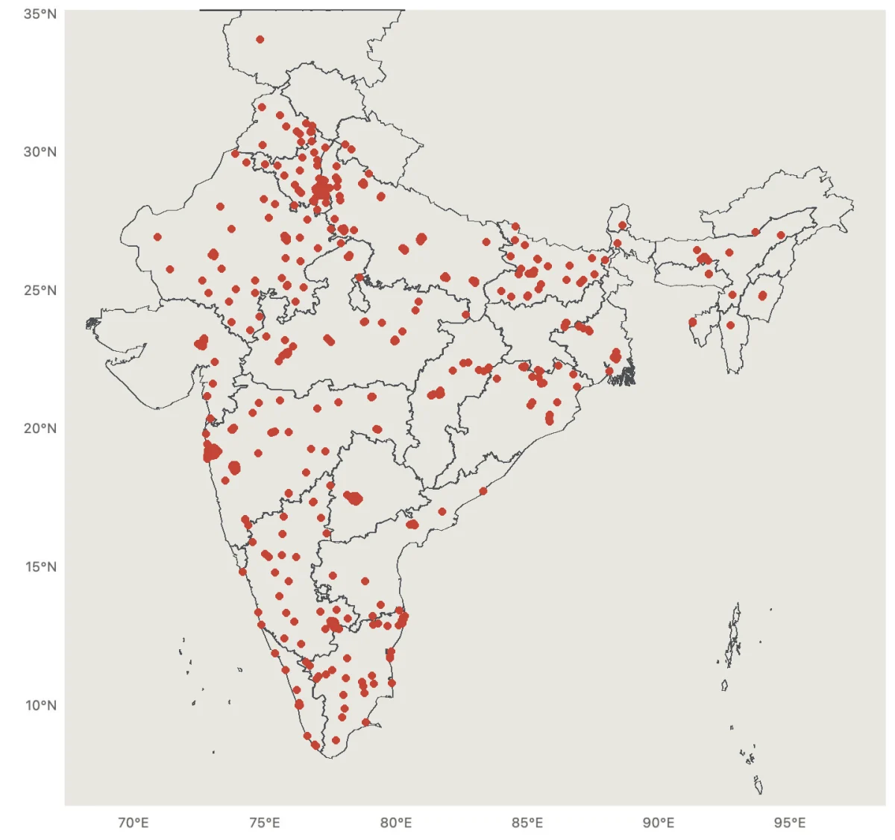
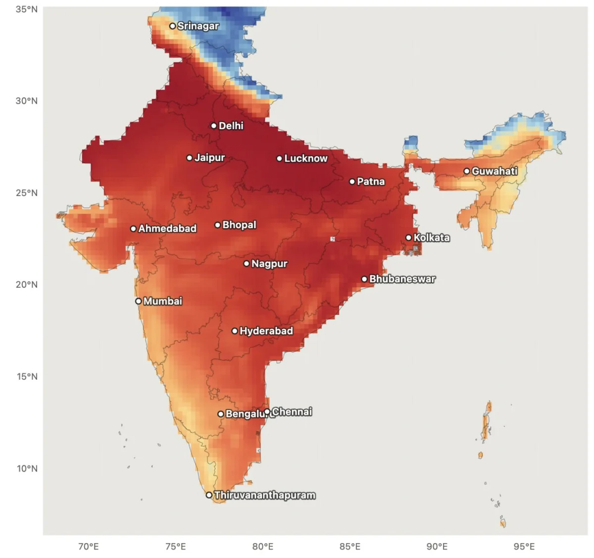
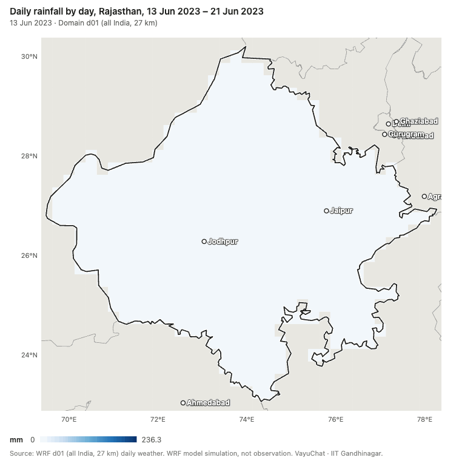
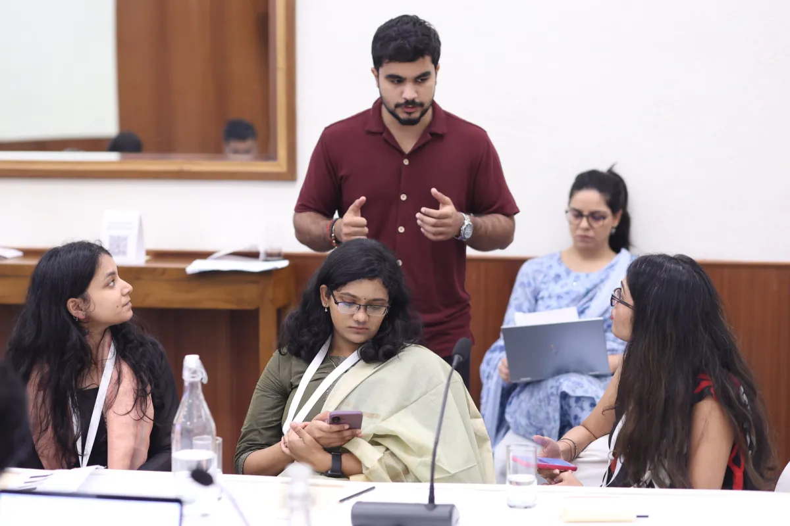
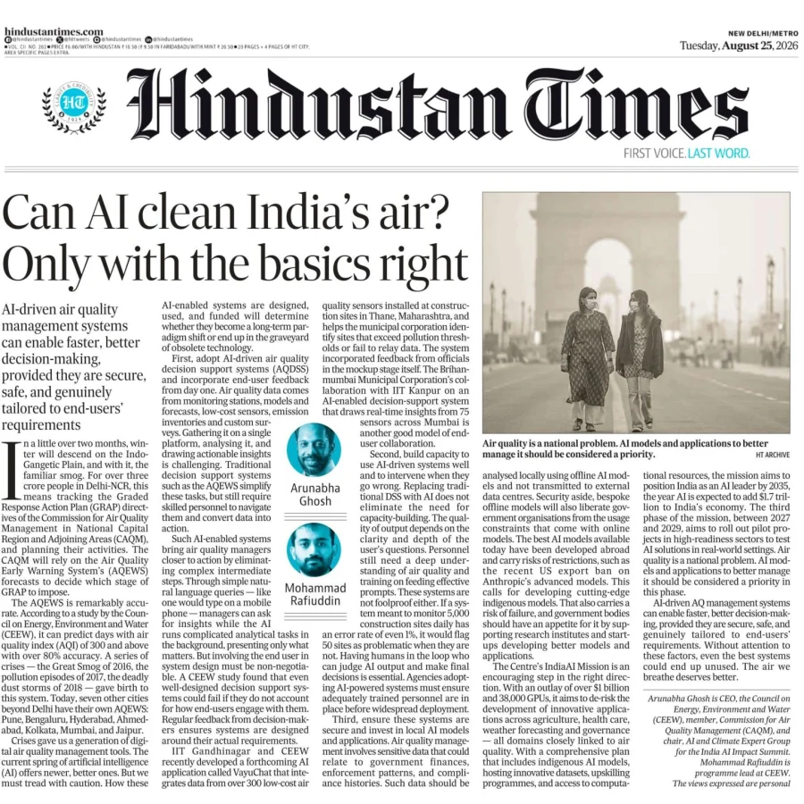

Checked answers over official CPCB data, weather on a grid from our own WRF model, offline phone apps, and where VayuChat is being used, with CEEW, in Thane and New Delhi.
The VayuChat film, October 2026 · 2 min 14 s · YouTube loads only when you press play.
New · Weather on a grid
From 535 stations to every 27 km of India.
VayuChat can now answer questions over gridded weather from the Sustainability Lab's own WRF simulation, not only over monitoring stations: a value for every 0.25° cell of India, on every day of 2023 and 2024. Ask about a heatwave or a cyclone and get back a map or an animation you can download.

Before · stations535 monitoring stations Measurements exist where stations are, mostly in cities.→

Now · WRF grid14,375 grid cells, every day A modelled value in every cell of the country, including where no station exists.
115 × 125
cells of 0.25° (about 27 km)
731
days, 2023 and 2024
1,05,08,125
values per variable
4
variables: max temperature, rainfall, 10 m wind, boundary-layer height
Ask about a heatwave
“Map the mean maximum temperature across India during the 25–31 May 2024 heatwave.”
The answer is a map of the week's mean daily maximum, up to 48.6 °C across the north, with the states and cities that were hottest. Ask for an animation instead and VayuChat plays it day by day.

Or about a cyclone
“Animate daily rainfall across Rajasthan from 13 to 21 June 2023 as Biparjoy's remnants crossed it.”
This animation is VayuChat's own GIF export, exactly as downloaded. Every map has Download image and every animation Download GIF, ready for a report or a slide.
WRF v4.7.1, domain d01 (27 km), run by the Sustainability Lab, IIT Gandhinagar. These are model simulations, not observations. Weather questions are in testing on the lab's VayuChat build and coming to the hosted app.
Three interfaces
Web, iPhone, Android.
Use the web workspace for deeper, source-linked analysis. Use either phone app when questions and data must stay on the device.
Web · hosted
Research workspace
Compare cities, inspect coverage, make maps, and trace every result back to its source and analysis recipe.
The chatbot in Thane's air-quality decision support system
Thane Municipal Corporation's Air Quality Decision Support System, built with CEEW, uses VayuChat to answer questions in Marathi and English over data from 350+ construction-site sensors. The system is featured in CPCB's Compendium of Best Practices under the National Clean Air Programme (September 2026).

New Delhi · 7 September 2026
Hands-on at Clean Air Horizons
At CEEW's Clean Air Horizons 2026, about 30 researchers, policy analysts and students tried VayuChat with their own questions. Photo: CEEW.

Hindustan Times · 25 August 2026
“Can AI clean India's air?”
CEEW's Arunabha Ghosh and Dr Mohammad Rafiuddin cite VayuChat as AI built around the people who use it.
The benchmark contains 5,000 natural-language queries paired with verified programs across seven query families. The study evaluates 13 open models under a common schema-aware protocol and follows the work through to VayuChat.
@inproceedings{acharya2025vayubench,
title={VayuBench and VayuChat: Executable Benchmarking and Deployment of LLMs for Multi-Dataset Air Quality Analytics},
author={Acharya, Vedant and Pisharodi, Abhay and Pasi, Ratnesh and Mondal, Rishabh and Batra, Nipun},
booktitle={13th ACM IKDD International Conference on Data Science},
year={2025},
doi={10.1145/3799830.3799884}
}
Demo paper · CODS 2025
VayuChat: An LLM-Powered Conversational Interface for Air Quality Data Analytics
Vedant Acharya, Abhay Pisharodi, Rishabh Mondal, and Nipun Batra